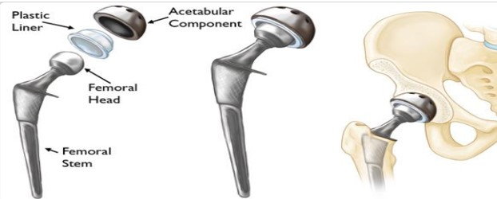
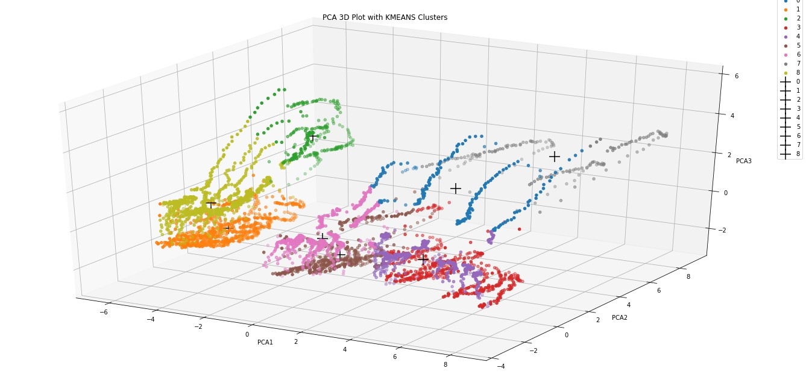
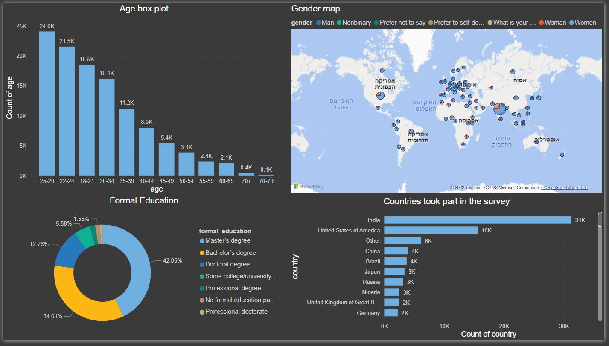

A bootstrapped chatbot built using the open-source conversational AI platform, Rasa. This chatbot has access to both Google Sheets and the OpenAI ChatGPT API, making it a powerful tool for generating answers to a wide range of questions.
This course taught by PhD Chen Sagiv from SagivTech, which focuses on classical computer vision methods with an emphasis on before the Deep era.
This course is designed for students who are interested in learning about image processing techniques that have been used for several decades in the field of computer vision.

A study was conducted on hip replacement surgery using audio analysis to distinguish between the final hits of early and late broach. Data from 31 THR surgeries was collected and analyzed using a heuristic algorithm to extract features from the audio recordings. The goal is to develop a machine learning model that can classify the final hits of the first and last broach. The results showed that the algorithm performed well and improved understanding of the raw data.

I wrote two articles, "In a Good Smell Part 1" and "In a Good Smell Part 2," to share my work on smell classification. I collected a dataset of various odors and used machine learning techniques to train a model to classify these odors. During the process, I faced challenges such as the high dimensionality of the odor data and the difficulty of obtaining labeled data for odor classification, but I was able to overcome these challenges. In the end, I was proud to present the results of my model, which showed promising accuracy in odor classification.

The work involved conducting a survey among Kaggle participants to gather information about their data preparation practices and the tools they use in data science. The survey results revealed the most popular visualization libraries, programming languages, online platforms for learning, IDEs, computer vision algorithms, NLP algorithms, and ML algorithms used by the participants. The results provide valuable insights into the data preparation practices and tool preferences of Kaggle users.